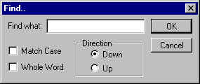

You'll learn more about text operations under RichEdit control. Specifically, you'll know how to search for/replace text, jumping to specific line number.
Download the example.
There are several text operations under RichEdit control. Searching for text is one such operation. Searching for text is done by sending EM_FINDTEXT or EM_FINDTEXTEX. These messages has a small difference.
EM_FINDTEXT wParam == Search options. Can be any combination of the values in the table below.These options are identical for both EM_FINDTEXT and EM_FINDTEXTEX
FR_DOWN If this flag is specified, the search starts from the end of the current selection to the end of the text in the control (downward). This flag has effect only for RichEdit 2.0 or later: This behavior is the default for RichEdit 1.0. The default behavior of RichEdit 2.0 or later is to search from the end of the current selection to the beginning of the text (upward).
In summary, if you use RichEdit 1.0, you can't do anything about the search direction: it always searches downward. If you use RichEdit 2.0 and you want to search downward, you must specify this flag else the search would be upward.FR_MATCHCASE If this flag is specified, the search is case-sensitive. FR_WHOLEWORD If this flag is set, the search finds the whole word that matches the specified search string. Actually, there are a few more flags but they are relevant to non-English languages. lParam == pointer to the FINDTEXT structure. FINDTEXT STRUCT chrg CHARRANGE <> lpstrText DWORD ? FINDTEXT ENDS chrg is a CHARRANGE structure which is defined as follows: CHARRANGE STRUCT cpMin DWORD ? cpMax DWORD ? CHARRANGE ENDS cpMin contains the character index of the first character in the character array (range). cpMax contains the character index of the character immediately following the last character in the character array. In essence, to search for a text string, you have to specify the character range in which to search. The meaning of cpMin and cpMax differ according to whether the search is downward or upward. If the search is downward, cpMin specifies the starting character index to search in and cpMax the ending character index. If the search is upward, the reverse is true, ie. cpMin contains the ending character index while cpMax the starting character index. lpstrText is the pointer to the text string to search for. EM_FINDTEXT returns the character index of the first character in the matching text string in the richedit control. It returns -1 if no match is found. EM_FINDTEXTEX wParam == the search options. Same as those of EM_FINDTEXT. lParam == pointer to the FINDTEXTEX structure. FINDTEXTEX STRUCT chrg CHARRANGE <> lpstrText DWORD ? chrgText CHARRANGE <> FINDTEXTEX ENDS The first two members of FINDTEXTEX are identical to those of FINDTEXT structure. chrgText is a CHARRANGE structure that will be filled with the starting/ending characterindices if a match is found. The return value of EM_FINDTEXTEX is the same as that of EM_FINDTEXT. The difference between EM_FINDTEXT and EM_FINDTEXTEX is that the FINDTEXTEX structure has an additional member, chrgText, which will be filled with the starting/ending character indices if a match is found. This is convenient if we want to do more text operations on the string.
RichEdit control provides EM_SETTEXTEX for replacing/inserting text. This message combines the functionality of WM_SETTEXT and EM_REPLACESEL. It has the following syntax:
EM_SETTEXTEX wParam == pointer to SETTEXTEX structure. SETTEXTEX STRUCT flags DWORD ? codepage DWORD ? SETTEXTEX ENDS flags can be the combination of the following values:
| ST_DEFAULT | Deletes the undo stack, discards rich-text formatting, replaces all text. |
| ST_KEEPUNDO | Keeps the undo stack |
| ST_SELECTION | Replaces selection and keeps rich-text formatting |
codepage is the constant that specifies the code page you want to text to be. Usually, we simply use CP_ACP.
We can select the text programmatically with
EM_SETSEL
or EM_EXSETSEL. Either one works fine. Choosing
which message to use depends on the available format of the character indices.
If they are already stored in a CHARRANGE
structure, it's easier to use EM_EXSETSEL.
EM_EXSETSEL wParam == not used. Must be 0 lParam == pointer to a CHARRANGE structure that contains the character range to be selected.
In the case of a multiline edit control, you have to subclass it in order to obtain the input messages such as mouse/keyboard events. RichEdit control provides a better scheme that will notify the parent window of such events. In order to register for notifications, the parent window sends EM_SETEVENTMASK message to the RichEdit control, specifying which events it's interested in. EM_SETEVENTMASK has the following syntax:
EM_SETEVENTMASK wParam == not used. Must be 0 lParam == event mask value. It can be the combination of the flags in the table below.
| ENM_CHANGE | Sends EN_CHANGE notifications |
| ENM_CORRECTTEXT | Sends EN_CORRECTTEXT notifications |
| ENM_DRAGDROPDONE | Sends EN_DRAGDROPDONE notifications |
| ENM_DROPFILES | Sends EN_DROPFILES notifications. |
| ENM_KEYEVENTS | Sends EN_MSGFILTER notifications for keyboard events |
| ENM_LINK | Rich Edit 2.0 and later: Sends EN_LINK notifications when the mouse pointer is over text that has the CFE_LINK and one of several mouse actions is performed. |
| ENM_MOUSEEVENTS | Sends EN_MSGFILTER notifications for mouse events |
| ENM_OBJECTPOSITIONS | Sends EN_OBJECTPOSITIONS notifications |
| ENM_PROTECTED | Sends EN_PROTECTED notifications |
| ENM_REQUESTRESIZE | Sends EN_REQUESTRESIZE notifications |
| ENM_SCROLL | Sends EN_HSCROLL and EN_VSCROLL notifications |
| ENM_SCROLLEVENTS | Sends EN_MSGFILTER notifications for mouse wheel events |
| ENM_SELCHANGE | Sends EN_SELCHANGE notifications |
| ENM_UPDATE |
Sends EN_UPDATE
notifications. |
All the above notifications will be sent as WM_NOTIFY message: you have to check the code member of NMHDR structure for the notification message. For example, if you want to register for mouse events (eg. you want to provide a context sensitive popup menu), you must do something like this:
invoke SendMessage,hwndRichEdit,EM_SETEVENTMASK,0,ENM_MOUSEEVENTS ..... ..... WndProc proc hWnd:DWORD, uMsg:DWORD, wParam:DWORD, lParam:DWORD ..... .... .elseif uMsg==WM_NOTIFY push esi mov esi,lParam assume esi:ptr NMHDR .if [esi].code==EN_MSGFILTER .... [ do something here] .... .endif pop esi
The following example is the update of IczEdit in tutorial no. 33. It adds search/replace functionality and accelerator keys to the program. It also processes the mouse events and provides a popup menu on right mouse click.
.386
.model flat,stdcall
option casemap:none
include \masm32\include\windows.inc
include \masm32\include\user32.inc
include \masm32\include\comdlg32.inc
include \masm32\include\gdi32.inc
include \masm32\include\kernel32.inc
includelib \masm32\lib\gdi32.lib
includelib \masm32\lib\comdlg32.lib
includelib \masm32\lib\user32.lib
includelib \masm32\lib\kernel32.lib
WinMain proto :DWORD,:DWORD,:DWORD,:DWORD
.const
IDR_MAINMENU equ 101
IDM_OPEN equ 40001
IDM_SAVE equ 40002
IDM_CLOSE equ 40003
IDM_SAVEAS equ 40004
IDM_EXIT equ 40005
IDM_COPY equ 40006
IDM_CUT equ 40007
IDM_PASTE equ 40008
IDM_DELETE equ 40009
IDM_SELECTALL equ 40010
IDM_OPTION equ 40011
IDM_UNDO equ 40012
IDM_REDO equ 40013
IDD_OPTIONDLG equ 101
IDC_BACKCOLORBOX equ 1000
IDC_TEXTCOLORBOX equ 1001
IDR_MAINACCEL equ 105
IDD_FINDDLG equ 102
IDD_GOTODLG equ 103
IDD_REPLACEDLG equ 104
IDC_FINDEDIT equ 1000
IDC_MATCHCASE equ 1001
IDC_REPLACEEDIT equ 1001
IDC_WHOLEWORD equ 1002
IDC_DOWN equ 1003
IDC_UP equ 1004
IDC_LINENO equ 1005
IDM_FIND equ 40014
IDM_FINDNEXT equ 40015
IDM_REPLACE equ 40016
IDM_GOTOLINE equ 40017
IDM_FINDPREV equ 40018
RichEditID equ 300
.data
ClassName db "IczEditClass",0
AppName db "IczEdit version 2.0",0
RichEditDLL db "riched20.dll",0
RichEditClass db "RichEdit20A",0
NoRichEdit db "Cannot find riched20.dll",0
ASMFilterString db "ASM Source code (*.asm)",0,"*.asm",0
db "All Files (*.*)",0,"*.*",0,0
OpenFileFail db "Cannot open the file",0
WannaSave db "The data in the control is modified. Want to save it?",0
FileOpened dd FALSE
BackgroundColor dd 0FFFFFFh ; default to white
TextColor dd 0 ; default to black
hSearch dd ? ; handle to the search/replace dialog box
hAccel dd ?
.data?
hInstance dd ?
hRichEdit dd ?
hwndRichEdit dd ?
FileName db 256 dup(?)
AlternateFileName db 256 dup(?)
CustomColors dd 16 dup(?)
FindBuffer db 256 dup(?)
ReplaceBuffer db 256 dup(?)
uFlags dd ?
findtext FINDTEXTEX <>
.code
start:
mov byte ptr [FindBuffer],0
mov byte ptr [ReplaceBuffer],0
invoke GetModuleHandle, NULL
mov hInstance,eax
invoke LoadLibrary,addr RichEditDLL
.if eax!=0
mov hRichEdit,eax
invoke WinMain, hInstance,0,0, SW_SHOWDEFAULT
invoke FreeLibrary,hRichEdit
.else
invoke MessageBox,0,addr NoRichEdit,addr AppName,MB_OK or MB_ICONERROR
.endif
invoke ExitProcess,eax
WinMain proc hInst:DWORD,hPrevInst:DWORD,CmdLine:DWORD,CmdShow:DWORD
LOCAL wc:WNDCLASSEX
LOCAL msg:MSG
LOCAL hwnd:DWORD
mov wc.cbSize,SIZEOF WNDCLASSEX
mov wc.style, CS_HREDRAW or CS_VREDRAW
mov wc.lpfnWndProc, OFFSET WndProc
mov wc.cbClsExtra,NULL
mov wc.cbWndExtra,NULL
push hInst
pop wc.hInstance
mov wc.hbrBackground,COLOR_WINDOW+1
mov wc.lpszMenuName,IDR_MAINMENU
mov wc.lpszClassName,OFFSET ClassName
invoke LoadIcon,NULL,IDI_APPLICATION
mov wc.hIcon,eax
mov wc.hIconSm,eax
invoke LoadCursor,NULL,IDC_ARROW
mov wc.hCursor,eax
invoke RegisterClassEx, addr wc
INVOKE CreateWindowEx,NULL,ADDR ClassName,ADDR AppName,\
WS_OVERLAPPEDWINDOW,CW_USEDEFAULT,\
CW_USEDEFAULT,CW_USEDEFAULT,CW_USEDEFAULT,NULL,NULL,\
hInst,NULL
mov hwnd,eax
invoke ShowWindow, hwnd,SW_SHOWNORMAL
invoke UpdateWindow, hwnd
invoke LoadAccelerators,hInstance,IDR_MAINACCEL
mov hAccel,eax
.while TRUE
invoke GetMessage, ADDR msg,0,0,0
.break .if (!eax)
invoke IsDialogMessage,hSearch,addr msg
.if eax==FALSE
invoke TranslateAccelerator,hwnd,hAccel,addr msg
.if eax==0
invoke TranslateMessage, ADDR msg
invoke DispatchMessage, ADDR msg
.endif
.endif
.endw
mov eax,msg.wParam
ret
WinMain endp
StreamInProc proc hFile:DWORD,pBuffer:DWORD, NumBytes:DWORD, pBytesRead:DWORD
invoke ReadFile,hFile,pBuffer,NumBytes,pBytesRead,0
xor eax,1
ret
StreamInProc endp
StreamOutProc proc hFile:DWORD,pBuffer:DWORD, NumBytes:DWORD, pBytesWritten:DWORD
invoke WriteFile,hFile,pBuffer,NumBytes,pBytesWritten,0
xor eax,1
ret
StreamOutProc endp
CheckModifyState proc hWnd:DWORD
invoke SendMessage,hwndRichEdit,EM_GETMODIFY,0,0
.if eax!=0
invoke MessageBox,hWnd,addr WannaSave,addr AppName,MB_YESNOCANCEL
.if eax==IDYES
invoke SendMessage,hWnd,WM_COMMAND,IDM_SAVE,0
.elseif eax==IDCANCEL
mov eax,FALSE
ret
.endif
.endif
mov eax,TRUE
ret
CheckModifyState endp
SetColor proc
LOCAL cfm:CHARFORMAT
invoke SendMessage,hwndRichEdit,EM_SETBKGNDCOLOR,0,BackgroundColor
invoke RtlZeroMemory,addr cfm,sizeof cfm
mov cfm.cbSize,sizeof cfm
mov cfm.dwMask,CFM_COLOR
push TextColor
pop cfm.crTextColor
invoke SendMessage,hwndRichEdit,EM_SETCHARFORMAT,SCF_ALL,addr cfm
ret
SetColor endp
OptionProc proc hWnd:DWORD, uMsg:DWORD, wParam:DWORD, lParam:DWORD
LOCAL clr:CHOOSECOLOR
.if uMsg==WM_INITDIALOG
.elseif uMsg==WM_COMMAND
mov eax,wParam
shr eax,16
.if ax==BN_CLICKED
mov eax,wParam
.if ax==IDCANCEL
invoke SendMessage,hWnd,WM_CLOSE,0,0
.elseif ax==IDC_BACKCOLORBOX
invoke RtlZeroMemory,addr clr,sizeof clr
mov clr.lStructSize,sizeof clr
push hWnd
pop clr.hwndOwner
push hInstance
pop clr.hInstance
push BackgroundColor
pop clr.rgbResult
mov clr.lpCustColors,offset CustomColors
mov clr.Flags,CC_ANYCOLOR or CC_RGBINIT
invoke ChooseColor,addr clr
.if eax!=0
push clr.rgbResult
pop BackgroundColor
invoke GetDlgItem,hWnd,IDC_BACKCOLORBOX
invoke InvalidateRect,eax,0,TRUE
.endif
.elseif ax==IDC_TEXTCOLORBOX
invoke RtlZeroMemory,addr clr,sizeof clr
mov clr.lStructSize,sizeof clr
push hWnd
pop clr.hwndOwner
push hInstance
pop clr.hInstance
push TextColor
pop clr.rgbResult
mov clr.lpCustColors,offset CustomColors
mov clr.Flags,CC_ANYCOLOR or CC_RGBINIT
invoke ChooseColor,addr clr
.if eax!=0
push clr.rgbResult
pop TextColor
invoke GetDlgItem,hWnd,IDC_TEXTCOLORBOX
invoke InvalidateRect,eax,0,TRUE
.endif
.elseif ax==IDOK
invoke SendMessage,hwndRichEdit,EM_GETMODIFY,0,0
push eax
invoke SetColor
pop eax
invoke SendMessage,hwndRichEdit,EM_SETMODIFY,eax,0
invoke EndDialog,hWnd,0
.endif
.endif
.elseif uMsg==WM_CTLCOLORSTATIC
invoke GetDlgItem,hWnd,IDC_BACKCOLORBOX
.if eax==lParam
invoke CreateSolidBrush,BackgroundColor
ret
.else
invoke GetDlgItem,hWnd,IDC_TEXTCOLORBOX
.if eax==lParam
invoke CreateSolidBrush,TextColor
ret
.endif
.endif
mov eax,FALSE
ret
.elseif uMsg==WM_CLOSE
invoke EndDialog,hWnd,0
.else
mov eax,FALSE
ret
.endif
mov eax,TRUE
ret
OptionProc endp
SearchProc proc hWnd:DWORD, uMsg:DWORD, wParam:DWORD, lParam:DWORD
.if uMsg==WM_INITDIALOG
push hWnd
pop hSearch
invoke CheckRadioButton,hWnd,IDC_DOWN,IDC_UP,IDC_DOWN
invoke SendDlgItemMessage,hWnd,IDC_FINDEDIT,WM_SETTEXT,0,addr FindBuffer
.elseif uMsg==WM_COMMAND
mov eax,wParam
shr eax,16
.if ax==BN_CLICKED
mov eax,wParam
.if ax==IDOK
mov uFlags,0
invoke SendMessage,hwndRichEdit,EM_EXGETSEL,0,addr findtext.chrg
invoke GetDlgItemText,hWnd,IDC_FINDEDIT,addr FindBuffer,sizeof FindBuffer
.if eax!=0
invoke IsDlgButtonChecked,hWnd,IDC_DOWN
.if eax==BST_CHECKED
or uFlags,FR_DOWN
mov eax,findtext.chrg.cpMin
.if eax!=findtext.chrg.cpMax
push findtext.chrg.cpMax
pop findtext.chrg.cpMin
.endif
mov findtext.chrg.cpMax,-1
.else
mov findtext.chrg.cpMax,0
.endif
invoke IsDlgButtonChecked,hWnd,IDC_MATCHCASE
.if eax==BST_CHECKED
or uFlags,FR_MATCHCASE
.endif
invoke IsDlgButtonChecked,hWnd,IDC_WHOLEWORD
.if eax==BST_CHECKED
or uFlags,FR_WHOLEWORD
.endif
mov findtext.lpstrText,offset FindBuffer
invoke SendMessage,hwndRichEdit,EM_FINDTEXTEX,uFlags,addr findtext
.if eax!=-1
invoke SendMessage,hwndRichEdit,EM_EXSETSEL,0,addr findtext.chrgText
.endif
.endif
.elseif ax==IDCANCEL
invoke SendMessage,hWnd,WM_CLOSE,0,0
.else
mov eax,FALSE
ret
.endif
.endif
.elseif uMsg==WM_CLOSE
mov hSearch,0
invoke EndDialog,hWnd,0
.else
mov eax,FALSE
ret
.endif
mov eax,TRUE
ret
SearchProc endp
ReplaceProc proc hWnd:DWORD, uMsg:DWORD, wParam:DWORD, lParam:DWORD
LOCAL settext:SETTEXTEX
.if uMsg==WM_INITDIALOG
push hWnd
pop hSearch
invoke SetDlgItemText,hWnd,IDC_FINDEDIT,addr FindBuffer
invoke SetDlgItemText,hWnd,IDC_REPLACEEDIT,addr ReplaceBuffer
.elseif uMsg==WM_COMMAND
mov eax,wParam
shr eax,16
.if ax==BN_CLICKED
mov eax,wParam
.if ax==IDCANCEL
invoke SendMessage,hWnd,WM_CLOSE,0,0
.elseif ax==IDOK
invoke GetDlgItemText,hWnd,IDC_FINDEDIT,addr FindBuffer,sizeof FindBuffer
invoke GetDlgItemText,hWnd,IDC_REPLACEEDIT,addr ReplaceBuffer,sizeof ReplaceBuffer
mov findtext.chrg.cpMin,0
mov findtext.chrg.cpMax,-1
mov findtext.lpstrText,offset FindBuffer
mov settext.flags,ST_SELECTION
mov settext.codepage,CP_ACP
.while TRUE
invoke SendMessage,hwndRichEdit,EM_FINDTEXTEX,FR_DOWN,addr findtext
.if eax==-1
.break
.else
invoke SendMessage,hwndRichEdit,EM_EXSETSEL,0,addr findtext.chrgText
invoke SendMessage,hwndRichEdit,EM_SETTEXTEX,addr settext,addr ReplaceBuffer
.endif
.endw
.endif
.endif
.elseif uMsg==WM_CLOSE
mov hSearch,0
invoke EndDialog,hWnd,0
.else
mov eax,FALSE
ret
.endif
mov eax,TRUE
ret
ReplaceProc endp
GoToProc proc hWnd:DWORD, uMsg:DWORD, wParam:DWORD, lParam:DWORD
LOCAL LineNo:DWORD
LOCAL chrg:CHARRANGE
.if uMsg==WM_INITDIALOG
push hWnd
pop hSearch
.elseif uMsg==WM_COMMAND
mov eax,wParam
shr eax,16
.if ax==BN_CLICKED
mov eax,wParam
.if ax==IDCANCEL
invoke SendMessage,hWnd,WM_CLOSE,0,0
.elseif ax==IDOK
invoke GetDlgItemInt,hWnd,IDC_LINENO,NULL,FALSE
mov LineNo,eax
invoke SendMessage,hwndRichEdit,EM_GETLINECOUNT,0,0
.if eax>LineNo
invoke SendMessage,hwndRichEdit,EM_LINEINDEX,LineNo,0
mov chrg.cpMin,eax
mov chrg.cpMax,eax
invoke SendMessage,hwndRichEdit,EM_EXSETSEL,0,addr chrg
invoke SetFocus,hwndRichEdit
.endif
.endif
.endif
.elseif uMsg==WM_CLOSE
mov hSearch,0
invoke EndDialog,hWnd,0
.else
mov eax,FALSE
ret
.endif
mov eax,TRUE
ret
GoToProc endp
PrepareEditMenu proc hSubMenu:DWORD
LOCAL chrg:CHARRANGE
invoke SendMessage,hwndRichEdit,EM_CANPASTE,CF_TEXT,0
.if eax==0 ; no text in the clipboard
invoke EnableMenuItem,hSubMenu,IDM_PASTE,MF_GRAYED
.else
invoke EnableMenuItem,hSubMenu,IDM_PASTE,MF_ENABLED
.endif
invoke SendMessage,hwndRichEdit,EM_CANUNDO,0,0
.if eax==0
invoke EnableMenuItem,hSubMenu,IDM_UNDO,MF_GRAYED
.else
invoke EnableMenuItem,hSubMenu,IDM_UNDO,MF_ENABLED
.endif
invoke SendMessage,hwndRichEdit,EM_CANREDO,0,0
.if eax==0
invoke EnableMenuItem,hSubMenu,IDM_REDO,MF_GRAYED
.else
invoke EnableMenuItem,hSubMenu,IDM_REDO,MF_ENABLED
.endif
invoke SendMessage,hwndRichEdit,EM_EXGETSEL,0,addr chrg
mov eax,chrg.cpMin
.if eax==chrg.cpMax ; no current selection
invoke EnableMenuItem,hSubMenu,IDM_COPY,MF_GRAYED
invoke EnableMenuItem,hSubMenu,IDM_CUT,MF_GRAYED
invoke EnableMenuItem,hSubMenu,IDM_DELETE,MF_GRAYED
.else
invoke EnableMenuItem,hSubMenu,IDM_COPY,MF_ENABLED
invoke EnableMenuItem,hSubMenu,IDM_CUT,MF_ENABLED
invoke EnableMenuItem,hSubMenu,IDM_DELETE,MF_ENABLED
.endif
ret
PrepareEditMenu endp
WndProc proc hWnd:DWORD, uMsg:DWORD, wParam:DWORD, lParam:DWORD
LOCAL ofn:OPENFILENAME
LOCAL buffer[256]:BYTE
LOCAL editstream:EDITSTREAM
LOCAL hFile:DWORD
LOCAL hPopup:DWORD
LOCAL pt:POINT
LOCAL chrg:CHARRANGE
.if uMsg==WM_CREATE
invoke CreateWindowEx,WS_EX_CLIENTEDGE,addr RichEditClass,0,WS_CHILD or WS_VISIBLE or ES_MULTILINE or WS_VSCROLL or WS_HSCROLL or ES_NOHIDESEL,\
CW_USEDEFAULT,CW_USEDEFAULT, CW_USEDEFAULT, CW_USEDEFAULT,hWnd,RichEditID,hInstance,0
mov hwndRichEdit,eax
invoke SendMessage,hwndRichEdit,EM_LIMITTEXT,-1,0
invoke SetColor
invoke SendMessage,hwndRichEdit,EM_SETMODIFY,FALSE,0
invoke SendMessage,hwndRichEdit,EM_SETEVENTMASK,0,ENM_MOUSEEVENTS
invoke SendMessage,hwndRichEdit,EM_EMPTYUNDOBUFFER,0,0
.elseif uMsg==WM_NOTIFY
push esi
mov esi,lParam
assume esi:ptr NMHDR
.if [esi].code==EN_MSGFILTER
assume esi:ptr MSGFILTER
.if [esi].msg==WM_RBUTTONDOWN
invoke GetMenu,hWnd
invoke GetSubMenu,eax,1
mov hPopup,eax
invoke PrepareEditMenu,hPopup
mov edx,[esi].lParam
mov ecx,edx
and edx,0FFFFh
shr ecx,16
mov pt.x,edx
mov pt.y,ecx
invoke ClientToScreen,hWnd,addr pt
invoke TrackPopupMenu,hPopup,TPM_LEFTALIGN or TPM_BOTTOMALIGN,pt.x,pt.y,NULL,hWnd,NULL
.endif
.endif
pop esi
.elseif uMsg==WM_INITMENUPOPUP
mov eax,lParam
.if ax==0 ; file menu
.if FileOpened==TRUE ; a file is already opened
invoke EnableMenuItem,wParam,IDM_OPEN,MF_GRAYED
invoke EnableMenuItem,wParam,IDM_CLOSE,MF_ENABLED
invoke EnableMenuItem,wParam,IDM_SAVE,MF_ENABLED
invoke EnableMenuItem,wParam,IDM_SAVEAS,MF_ENABLED
.else
invoke EnableMenuItem,wParam,IDM_OPEN,MF_ENABLED
invoke EnableMenuItem,wParam,IDM_CLOSE,MF_GRAYED
invoke EnableMenuItem,wParam,IDM_SAVE,MF_GRAYED
invoke EnableMenuItem,wParam,IDM_SAVEAS,MF_GRAYED
.endif
.elseif ax==1 ; edit menu
invoke PrepareEditMenu,wParam
.elseif ax==2 ; search menu bar
.if FileOpened==TRUE
invoke EnableMenuItem,wParam,IDM_FIND,MF_ENABLED
invoke EnableMenuItem,wParam,IDM_FINDNEXT,MF_ENABLED
invoke EnableMenuItem,wParam,IDM_FINDPREV,MF_ENABLED
invoke EnableMenuItem,wParam,IDM_REPLACE,MF_ENABLED
invoke EnableMenuItem,wParam,IDM_GOTOLINE,MF_ENABLED
.else
invoke EnableMenuItem,wParam,IDM_FIND,MF_GRAYED
invoke EnableMenuItem,wParam,IDM_FINDNEXT,MF_GRAYED
invoke EnableMenuItem,wParam,IDM_FINDPREV,MF_GRAYED
invoke EnableMenuItem,wParam,IDM_REPLACE,MF_GRAYED
invoke EnableMenuItem,wParam,IDM_GOTOLINE,MF_GRAYED
.endif
.endif
.elseif uMsg==WM_COMMAND
.if lParam==0 ; menu commands
mov eax,wParam
.if ax==IDM_OPEN
invoke RtlZeroMemory,addr ofn,sizeof ofn
mov ofn.lStructSize,sizeof ofn
push hWnd
pop ofn.hwndOwner
push hInstance
pop ofn.hInstance
mov ofn.lpstrFilter,offset ASMFilterString
mov ofn.lpstrFile,offset FileName
mov byte ptr [FileName],0
mov ofn.nMaxFile,sizeof FileName
mov ofn.Flags,OFN_FILEMUSTEXIST or OFN_HIDEREADONLY or OFN_PATHMUSTEXIST
invoke GetOpenFileName,addr ofn
.if eax!=0
invoke CreateFile,addr FileName,GENERIC_READ,FILE_SHARE_READ,NULL,OPEN_EXISTING,FILE_ATTRIBUTE_NORMAL,0
.if eax!=INVALID_HANDLE_VALUE
mov hFile,eax
;================================================================
; stream the text into the richedit control
;================================================================
mov editstream.dwCookie,eax
mov editstream.pfnCallback,offset StreamInProc
invoke SendMessage,hwndRichEdit,EM_STREAMIN,SF_TEXT,addr editstream
;==========================================================
; Initialize the modify state to false
;==========================================================
invoke SendMessage,hwndRichEdit,EM_SETMODIFY,FALSE,0
invoke CloseHandle,hFile
mov FileOpened,TRUE
.else
invoke MessageBox,hWnd,addr OpenFileFail,addr AppName,MB_OK or MB_ICONERROR
.endif
.endif
.elseif ax==IDM_CLOSE
invoke CheckModifyState,hWnd
.if eax==TRUE
invoke SetWindowText,hwndRichEdit,0
mov FileOpened,FALSE
.endif
.elseif ax==IDM_SAVE
invoke CreateFile,addr FileName,GENERIC_WRITE,FILE_SHARE_READ,NULL,CREATE_ALWAYS,FILE_ATTRIBUTE_NORMAL,0
.if eax!=INVALID_HANDLE_VALUE
@@:
mov hFile,eax
;================================================================
; stream the text to the file
;================================================================
mov editstream.dwCookie,eax
mov editstream.pfnCallback,offset StreamOutProc
invoke SendMessage,hwndRichEdit,EM_STREAMOUT,SF_TEXT,addr editstream
;==========================================================
; Initialize the modify state to false
;==========================================================
invoke SendMessage,hwndRichEdit,EM_SETMODIFY,FALSE,0
invoke CloseHandle,hFile
.else
invoke MessageBox,hWnd,addr OpenFileFail,addr AppName,MB_OK or MB_ICONERROR
.endif
.elseif ax==IDM_COPY
invoke SendMessage,hwndRichEdit,WM_COPY,0,0
.elseif ax==IDM_CUT
invoke SendMessage,hwndRichEdit,WM_CUT,0,0
.elseif ax==IDM_PASTE
invoke SendMessage,hwndRichEdit,WM_PASTE,0,0
.elseif ax==IDM_DELETE
invoke SendMessage,hwndRichEdit,EM_REPLACESEL,TRUE,0
.elseif ax==IDM_SELECTALL
mov chrg.cpMin,0
mov chrg.cpMax,-1
invoke SendMessage,hwndRichEdit,EM_EXSETSEL,0,addr chrg
.elseif ax==IDM_UNDO
invoke SendMessage,hwndRichEdit,EM_UNDO,0,0
.elseif ax==IDM_REDO
invoke SendMessage,hwndRichEdit,EM_REDO,0,0
.elseif ax==IDM_OPTION
invoke DialogBoxParam,hInstance,IDD_OPTIONDLG,hWnd,addr OptionProc,0
.elseif ax==IDM_SAVEAS
invoke RtlZeroMemory,addr ofn,sizeof ofn
mov ofn.lStructSize,sizeof ofn
push hWnd
pop ofn.hwndOwner
push hInstance
pop ofn.hInstance
mov ofn.lpstrFilter,offset ASMFilterString
mov ofn.lpstrFile,offset AlternateFileName
mov byte ptr [AlternateFileName],0
mov ofn.nMaxFile,sizeof AlternateFileName
mov ofn.Flags,OFN_FILEMUSTEXIST or OFN_HIDEREADONLY or OFN_PATHMUSTEXIST
invoke GetSaveFileName,addr ofn
.if eax!=0
invoke CreateFile,addr AlternateFileName,GENERIC_WRITE,FILE_SHARE_READ,NULL,CREATE_ALWAYS,FILE_ATTRIBUTE_NORMAL,0
.if eax!=INVALID_HANDLE_VALUE
jmp @B
.endif
.endif
.elseif ax==IDM_FIND
.if hSearch==0
invoke CreateDialogParam,hInstance,IDD_FINDDLG,hWnd,addr SearchProc,0
.endif
.elseif ax==IDM_REPLACE
.if hSearch==0
invoke CreateDialogParam,hInstance,IDD_REPLACEDLG,hWnd,addr ReplaceProc,0
.endif
.elseif ax==IDM_GOTOLINE
.if hSearch==0
invoke CreateDialogParam,hInstance,IDD_GOTODLG,hWnd,addr GoToProc,0
.endif
.elseif ax==IDM_FINDNEXT
invoke lstrlen,addr FindBuffer
.if eax!=0
invoke SendMessage,hwndRichEdit,EM_EXGETSEL,0,addr findtext.chrg
mov eax,findtext.chrg.cpMin
.if eax!=findtext.chrg.cpMax
push findtext.chrg.cpMax
pop findtext.chrg.cpMin
.endif
mov findtext.chrg.cpMax,-1
mov findtext.lpstrText,offset FindBuffer
invoke SendMessage,hwndRichEdit,EM_FINDTEXTEX,FR_DOWN,addr findtext
.if eax!=-1
invoke SendMessage,hwndRichEdit,EM_EXSETSEL,0,addr findtext.chrgText
.endif
.endif
.elseif ax==IDM_FINDPREV
invoke lstrlen,addr FindBuffer
.if eax!=0
invoke SendMessage,hwndRichEdit,EM_EXGETSEL,0,addr findtext.chrg
mov findtext.chrg.cpMax,0
mov findtext.lpstrText,offset FindBuffer
invoke SendMessage,hwndRichEdit,EM_FINDTEXTEX,0,addr findtext
.if eax!=-1
invoke SendMessage,hwndRichEdit,EM_EXSETSEL,0,addr findtext.chrgText
.endif
.endif
.elseif ax==IDM_EXIT
invoke SendMessage,hWnd,WM_CLOSE,0,0
.endif
.endif
.elseif uMsg==WM_CLOSE
invoke CheckModifyState,hWnd
.if eax==TRUE
invoke DestroyWindow,hWnd
.endif
.elseif uMsg==WM_SIZE
mov eax,lParam
mov edx,eax
and eax,0FFFFh
shr edx,16
invoke MoveWindow,hwndRichEdit,0,0,eax,edx,TRUE
.elseif uMsg==WM_DESTROY
invoke PostQuitMessage,NULL
.else
invoke DefWindowProc,hWnd,uMsg,wParam,lParam
ret
.endif
xor eax,eax
ret
WndProc endp
end start
The search-for-text capability is implemented with EM_FINDTEXTEX. When the user clicks on Find menuitem, IDM_FIND message is sent and the Find dialog box is displayed.

invoke GetDlgItemText,hWnd,IDC_FINDEDIT,addr FindBuffer,sizeof FindBuffer .if eax!=0
When the user types the text to search for and then press OK button, we get the text to be searched for into FindBuffer.
mov uFlags,0 invoke SendMessage,hwndRichEdit,EM_EXGETSEL,0,addr findtext.chrg
If the
text string is not null, we continue to initialize uFlags
variable to 0.This variable is used
to store the search flags used with EM_FINDTEXTEX.
After that, we obtain the current selection with EM_EXGETSEL
because we need to know the starting point of the search operation.
invoke IsDlgButtonChecked,hWnd,IDC_DOWN .if eax==BST_CHECKED or uFlags,FR_DOWN mov eax,findtext.chrg.cpMin .if eax!=findtext.chrg.cpMax push findtext.chrg.cpMax pop findtext.chrg.cpMin .endif mov findtext.chrg.cpMax,-1 .else mov findtext.chrg.cpMax,0 .endif
The next part is a little tricky. We check the direction radio button to ascertain which direction the search should go. If the downward search is indicated, we set FR_DOWN flag to uFlags. After that, we check whether a selection is currently in effect by comparing the values of cpMin and cpMax. If both values are not equal, it means there is a current selection and we must continue the search from the end of that selection to the end of text in the control. Thus we need to replace the value of cpMax with that of cpMin and change the value of cpMax to -1 (0FFFFFFFFh). If there is no current selection, the range to search is from the current caret position to the end of text.
If the user chooses to search upward, we use
the range from the start of the selection to the beginning of the text in the
control. That's why we only modify the value of cpMax
to 0. In the case of upward search, cpMin
contains the character index of the last character in the search range and cpMax
the character index of the first char in the search range. It's the inverse
of the downward search.
invoke IsDlgButtonChecked,hWnd,IDC_MATCHCASE .if eax==BST_CHECKED or uFlags,FR_MATCHCASE .endif invoke IsDlgButtonChecked,hWnd,IDC_WHOLEWORD .if eax==BST_CHECKED or uFlags,FR_WHOLEWORD .endif mov findtext.lpstrText,offset FindBuffer
We continue to check the checkboxes for
the search flags, ie, FR_MATCHCASE and FR_WHOLEWORD.
Lastly, we put the offset of the text to search for in lpstrText
member.
invoke SendMessage,hwndRichEdit,EM_FINDTEXTEX,uFlags,addr findtext .if eax!=-1 invoke SendMessage,hwndRichEdit,EM_EXSETSEL,0,addr findtext.chrgText .endif .endif
We are now ready to issue EM_FINDTEXTEX. After that, we examine the search result returned by SendMessage. If the return value is -1, no match is found in the search range. Otherwise, chrgText member of FINDTEXTEX structure is filled with the character indices of the matching text. We thus proceed to select it with EM_EXSETSEL.
The replace operation is done in much the same manner.
invoke GetDlgItemText,hWnd,IDC_FINDEDIT,addr FindBuffer,sizeof FindBuffer invoke GetDlgItemText,hWnd,IDC_REPLACEEDIT,addr ReplaceBuffer,sizeof ReplaceBuffer
We retrieve the text to search for and
the text used to replace.
mov findtext.chrg.cpMin,0 mov findtext.chrg.cpMax,-1 mov findtext.lpstrText,offset FindBuffer
To make it easy, the replace operation
affects all the text in the control. Thus the starting index is 0 and the ending
index is -1.
mov settext.flags,ST_SELECTION mov settext.codepage,CP_ACP
We initialize SETTEXTEX
structure to indicate that we want to replace the current selection and use
the default system code page.
.while TRUE invoke SendMessage,hwndRichEdit,EM_FINDTEXTEX,FR_DOWN,addr findtext .if eax==-1 .break .else invoke SendMessage,hwndRichEdit,EM_EXSETSEL,0,addr findtext.chrgText invoke SendMessage,hwndRichEdit,EM_SETTEXTEX,addr settext,addr ReplaceBuffer .endif .endw
We enter an infinite loop, searching for the matching text. If one is found, we select it with EM_EXSETSEL and replace it with EM_SETTEXTEX. When no more match is found, we exit the loop.
Find Next and Find Prev. features use EM_FINDTEXTEX message in the similar manner to the find operation.
We will examine the Go to Line feature next. When the user clicks Go To Line menuitem, we display a dialog box below:
When the user types a line number and presses Ok button, we begin the operation.
invoke GetDlgItemInt,hWnd,IDC_LINENO,NULL,FALSE mov LineNo,eax
Obtain the line number from
the edit control
invoke SendMessage,hwndRichEdit,EM_GETLINECOUNT,0,0 .if eax>LineNo
Obtain the number of lines
in the control. Check whether the user specifies the line number that is out
of the range.
invoke SendMessage,hwndRichEdit,EM_LINEINDEX,LineNo,0
If the line number is valid,
we want to move the caret to the first character of that line. So we send EM_LINEINDEX
message to the richedit control. This message returns the character index of
the first character in the specified line. We send the line number in wParam
and in return, we has the character index.
invoke SendMessage,hwndRichEdit,EM_SETSEL,eax,eax
To set the current selection, this time we use EM_SETSEL because the character indices are not already in a CHARRANGE structure thus it saves us two instructions (to put those indices into a CHARRANGE structure).
invoke SetFocus,hwndRichEdit .endif
The caret will not be displayed unless the richedit control has the focus. So we call SetFocus on it.
[Iczelion's
Win32 Assembly Homepage]